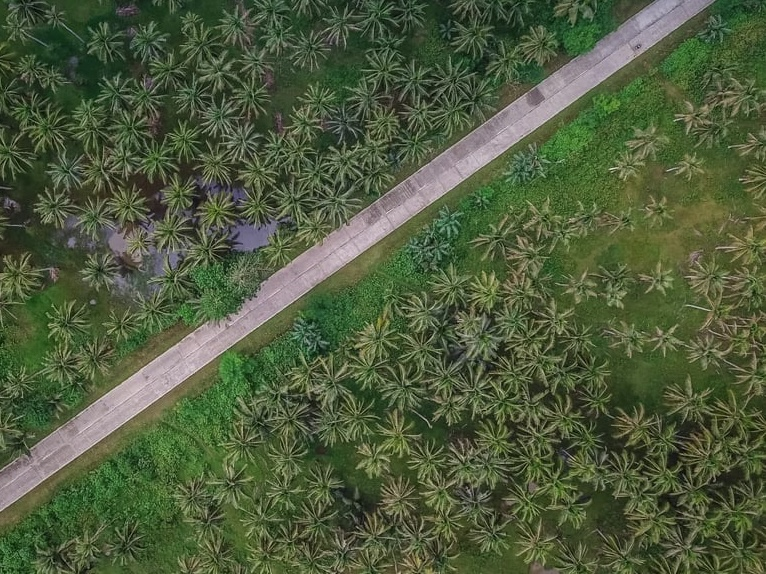
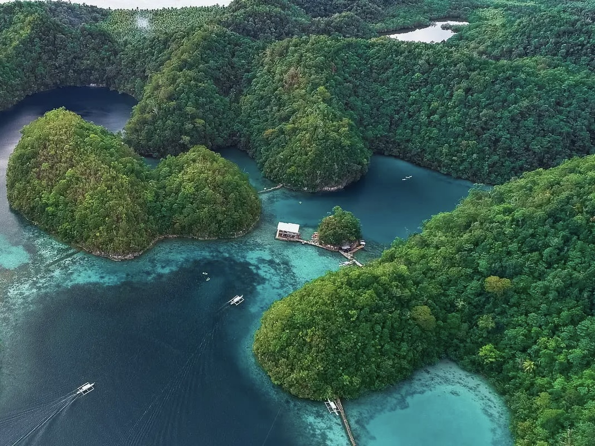
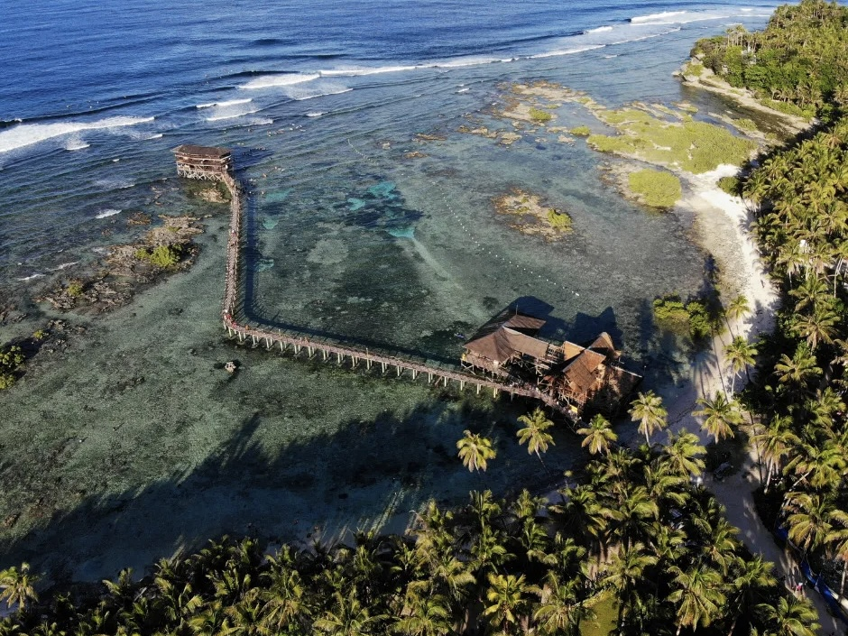
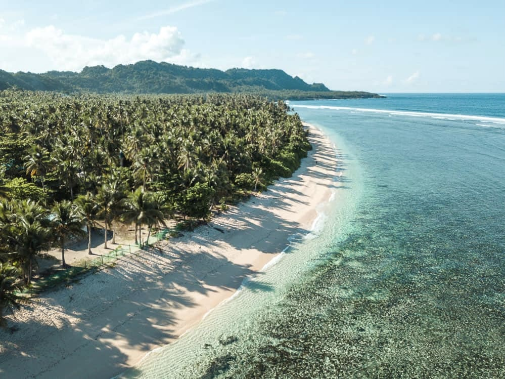
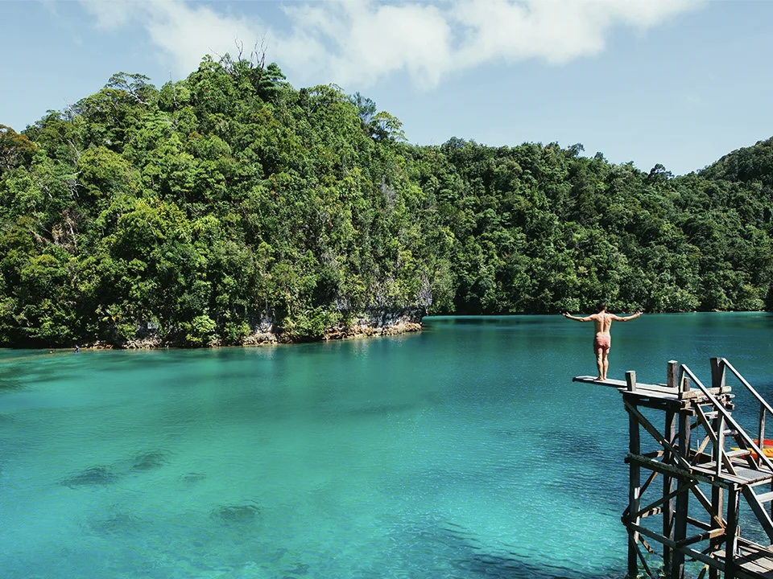
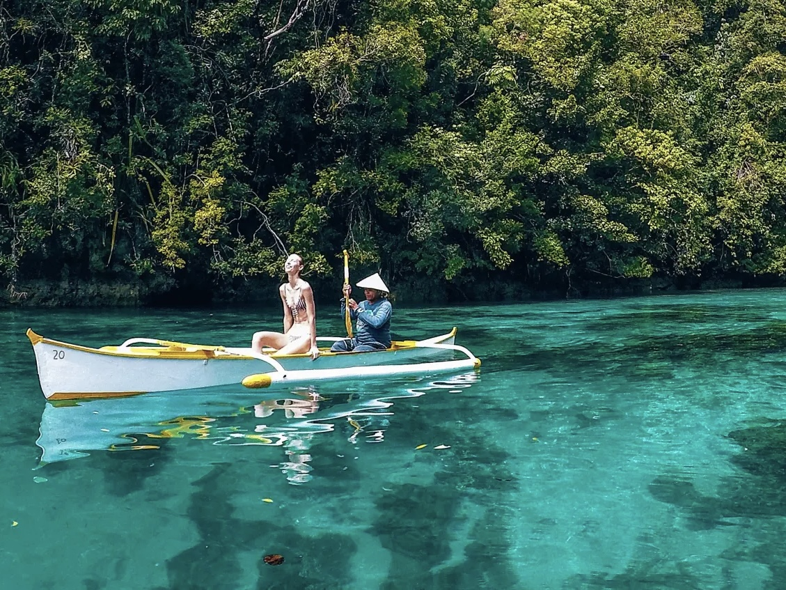
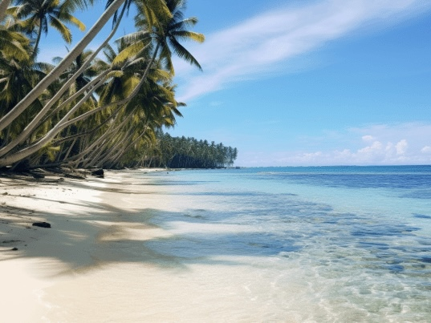
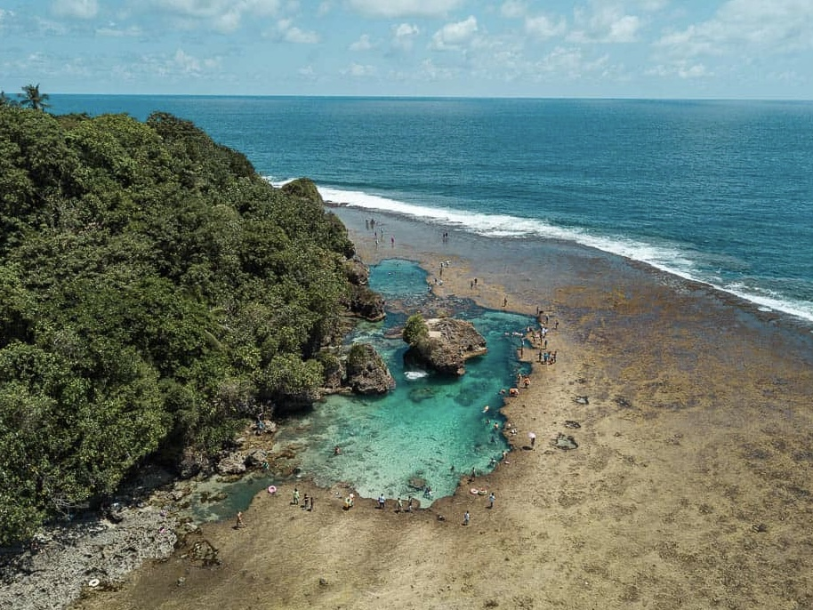

Siargao
| Located | Famous For | Travel Hours From Manila | Activities |
|---|---|---|---|
| Siargao Island, Surigao del Norte, Philippines | Renowned for surfing, particularly at Cloud 9, beautiful beaches, and vibrant nightlife. | About 1.5 hours by plane. | Surfing, island hopping, and exploring natural pools. |








| Travel Tips |
|---|
|
Best Time to Visit The ideal time to visit Siargao is during the dry season, from March to October. If you're coming for the surfing experience, aim for September to November, when the waves are at their best, especially at Cloud 9. |
|
How to Get There Fly directly to Sayak Airport (Siargao) from Manila or Cebu for the most convenient route. It's about 1.5 hours by plane from Manila. Alternatively, you can take a ferry from Surigao City if you're up for a scenic sea journey. |
|
Where to Stay General Luna is the most popular area for tourists, with a range of accommodations, from luxury resorts to budget-friendly hostels. Staying here will keep you close to most of the surf spots, restaurants, and nightlife. |
|
Pack Light, Pack Smart Bring light, breathable clothing suitable for tropical weather. Don’t forget essentials like sunscreen, insect repellent, a reusable water bottle, and a dry bag for island hopping. If you plan to surf, you can rent boards locally or bring your own. |
|
Explore Beyond Cloud 9 While Cloud 9 is famous for its waves, don’t miss other spots like Magpupungko Rock Pools, Sugba Lagoon, and the stunning islands of Daku, Naked, and Guyam. Each offers a unique experience, from crystal-clear waters to scenic landscapes. |
|
Rent a Motorcycle or Scooter The best way to explore the island is by renting a motorcycle or scooter, allowing you the freedom to visit hidden beaches and remote spots. Rental rates are usually affordable, but always wear a helmet and follow local driving rules. |
|
Try the Local Cuisine Siargao is a food lover’s paradise, with plenty of eateries offering fresh seafood, local Filipino dishes, and even international cuisine. Don’t miss trying the local specialty, kinilaw (Filipino ceviche), and explore the vibrant food scene in General Luna. |
|
Bring Cash While there are a few ATMs in General Luna, it's best to bring enough cash for your entire trip. Some smaller shops, restaurants, and activities may not accept credit cards, especially in remote areas of the island. |
|
Respect the Environment Siargao is known for its natural beauty, so make sure to do your part in keeping it clean. Avoid using single-use plastics, follow the Leave No Trace principle, and respect the local community and their way of life. |
|
Stay Connected While some accommodations provide Wi-Fi, it can be slow or unreliable. |